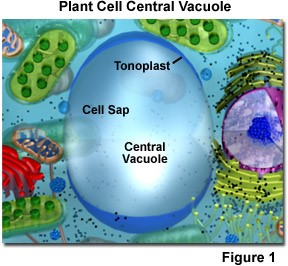
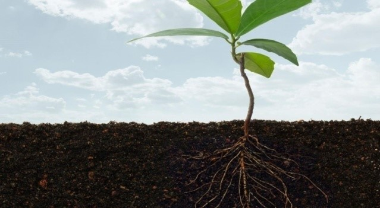
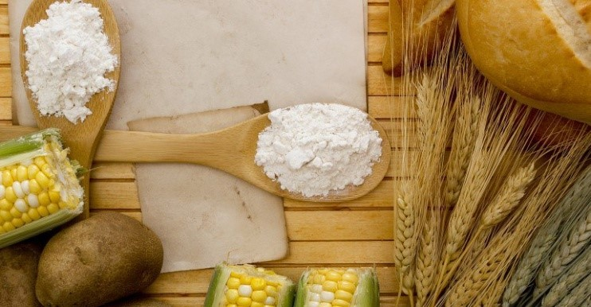
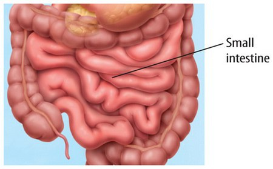
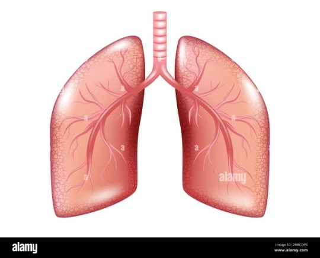

| N |
Atamaning o'zbekcha nomi |
Izoh |
Atamaning inglizcha nomi |
Izoh |
Atamaning ruscha nomi |
Izoh |
Rasmi |
| 1 |
Hujayra |
organizmning eng kichik strukturaviy va funksional birligi |
Cell |
the smallest stuructural and functional unit of an organizm. |
клетка. |
мельчайшая структурная и функциональная единица организма |
|
| 2 |
Xloroplast |
tarkibida xlorofill bo'lgan va fotosintez sodir bo'ladigan plastida. |
chloroplast |
in a plate containing chlorophyll and in which photosynthesis takes place. |
Хлоропласт |
в пластине, содержащей хлорофилл и фотосинтез. |
|
| 3 |
Mitaxondriya |
hujayraning asosan nafas oladigan va ATF energiyasini hosil qiladigan hujayra organoidi |
Mitachondria |
the cell organelle that the cell mainly breathes and produces ATF energy |
Митахондрия |
клеточная органелла, которой клетка в основном дышит и вырабатывает энергию АТФ |
|
| 4 |
sitoplazma |
hujayraning barcha organoidlar qismi. |
cytoplasm |
part of all the organelles of the cell. |
цитоплазма |
часть всех органоидов клетки |
|
| 5 |
Membrana |
hujayra sitoplazmasini o'rab turgan yarim o'tkazuvchan membrana |
Membrane |
a semiconducting membrane that surrounds the cell cytoplasm |
Мембрана |
полупроводниковая мембрана, окружающая цитоплазму клетки |
|
| 6 |
Vakuola |
hujayra sitoplazmasinidagi membrana bilan o'ralgan va odatda suyuqlikni o'z ichiga olgan
bo'shliq |
Vacuola |
a cavity in the cell cytoplasm that is surrounded by a membrane and usually contains fluid |
Вакуола |
полость в цитоплазме клетки, окруженная мембраной и обычно содержащая жидкость |
 |
| 7 |
To'qima |
Muayyan funksiyani bajaradigan bir-biriga o'xshash hujayralar to'plami |
Tissue |
A set of similar cells that perform a specific function |
Ткань |
Совокупность подобных клеток, выполняющих определенную функцию |
|
| 8 |
Barg |
o'simlikning fotosintez va transpiratsiya qiladigan asosiy vegetativ organi |
leaf |
the main vegetative organ of the plant for photosynthesis and transpiration |
лист |
главный вегетативный орган растения, обеспечивающий фотосинтез и транспирацию |
|
| 9 |
stapeliya |
katta yulduz shaklidagi go'shtli gullari bolgan shirali afrikalik o'simlik, ularda qalin
belgilar va chirigan go'shtning o'tkir hidi bor, bu changlatuvchi chivinlarni o'ziga tortadi |
stapelia |
a succulent African plant with large star-shaped fleshy flowers, which have thick marks and a
pungent odor of rotten flesh, which attracts pollinating mosquitoes |
стапелия |
суккулентное африканское растение с крупными звездчатыми мясистыми цветками, имеющими толстые
отметины и резкий запах гнилой плоти, привлекающий комаров-опылителей |
 |
| 10 |
changlanish |
urug'lanishni ta'minlash uchun gulchangi stigma, tuxumdon, gul yoki o'simlikka o'tqazish. |
pollination |
transplanting a pollen stigma, ovary, flower or plant to ensure fertilization. |
опыление |
пересадка пыльцевого рыльца, завязи, цветка или растения для обеспечения оплодотворения. |
|
| 11 |
changchi |
gulning erkak urug'lantiruvchi organi, odatda changi o'z ichiga olgan changdon va changchi
ipidan iborat. |
changchi |
the male fertilizing organ of the flower consists of a pollen and pollen filament, usually
containing pollen. |
Чанчи |
мужской оплодотворяющий орган цветка состоит из пыльцы и пыльцевой нити, обычно содержащей
пыльцу. |
|
| 12 |
urug'chi |
gulning ayol organlari, tumshuqcha, ustuncha va tugunchani o'z ichiga oladi. |
seed |
the female organs of the flower include the beak, column, and nodule. |
семя |
женские органы цветка включают клюв, столбик и узелок. |
|
| 13 |
gultojbarg |
gullarning reproduktiv qismlarini o'rab turgan o'zlashtirilgan barglaridir |
petal |
are assimilated leaves that surround the reproductive parts of flowers |
лепесток |
ассимилированные листья, окружающие репродуктивные части цветков |
|
| 14 |
gulkosachabarg |
Odatda yashil rangdagi gulkosachabarglar kurtakdagi gul uchun himoya vazifasini bajaradi va
kopincha gulkosachabarglarni himoya qiladi. |
sepal |
Usually the green petals serve as a protection for the flower in the bud and often protect the
petals. |
чашелистики цветения |
Обычно зеленые лепестки служат защитой для цветка в бутоне и часто защищают лепестки. |
|
| 15 |
Tuxumdon |
Bu gulli o'simlikning urug'ini hosil qiluvchi organ |
Ovule |
It is the organ that produces the seeds of the flowering plant |
яичник |
Это орган, который производит семена цветкового растения. |
|
| 16 |
chang |
gulli o'simliklarning erkin gametalarini o'z ichiga oladigan changdonda saqlanadigan gul qismi.
|
pollen |
the part of the flower that is stored in the pollen that contains the free gametes of flowering
plants. |
Чанг |
часть цветка, хранящаяся в пыльце и содержащая свободные гаметы цветковых растений. |
 |
| 17 |
Ragweed |
Romashka oilasiga mansub Shimoliy Amerika osimlik. Uning mayda yashil gullari ko'p miqdorida
gulchanglarni ishlab chiqaradi. |
Ragweed |
A North American plant belonging to the chamomile family. Its tiny green flowers produce large
amounts of pollen. |
Амброзия |
Североамериканское растение, принадлежащее к семейству ромашковых. Его крошечные зеленые цветки
производят большое количество пыльцы. |
|
| 18 |
Urug' |
Gulli osimlikning ko'payish organi bulib urug'dan yangi o'simlik osib chiqadi |
seed |
As a reproductive organ of a flowering plant, a new plant emerges from the seed |
Семя |
Как репродуктивный орган цветкового растения, новое растение появляется из семени. |
 |
| 19 |
Meva |
Meva daraxt yoki boshqa o'simlikning shirin va etli qismi, urug'ini o'z ichiga oladi va
oziq-ovqat sifatida iste'mol qilinadi. |
Fruit |
Fruit the sweet and fleshy product of a tree or other plant that contains seed and can be eaten
as food |
Плод |
сладкий и мясистый продукт дерева или другого растения, содержащий семена, который можно
употреблять в пищу. |
|
| 20 |
Avstraliya dengiz sheri |
Avstraliya suvlarida 10 turdagi muhrlar va dengiz sherlari uchraydi. Ulardan uchtasi odatda
janubiy Avstraliya suvlarida, qolganlari Avstraliyaning Antarktika hududida joylashgan. |
Australian sea lion |
10species of seals and sea lions occur in Australian waters. Of these, three are commonly found
in southern Australian waters and the remainder occur in Australia's Antarctic Territory. |
Австралийски тюлень. |
В австралийских водах встречается 10 видов тюленей и морских львов. Из них три обычно
встречаются в водах южной Австралии, а остальные встречаются на антарктической территории Австралии.
|
|
| 21 |
Parchalovchilar. |
organik moddalarni parchalaydigan organizm, ayniqsa tuproq bakteriyasi |
Decomposers |
Decomposers an organism, especially a soil bacterium, fungus, or invertebrate, that decomposes
organic material. |
Редуценты |
организмы, особенно почвенные бактерии, грибы или беспозвоночные, разлагающие органический
материал. |
|
| 22 |
Gifa |
qo'ziqorin mitseliyasini tashkil etuvchi shoxlangan filamentlarning har biri. |
Hyphae |
each of the branching filaments that make up the mycelium of a fungus. |
Гифы |
каждая из ветвящихся нитей, составляющих мицелий гриба. |
 |
| 23 |
Zamburug'lar |
organik moddalar, shu jumladan mog'or, xamirturush, qo'ziqorin va zamburug'lar bilan
oziqlanadigan spora hosil qiluvchi organizmlarning har qanday guruhi. |
Fung |
any of a group of spore-producing organisms feeding on organic matter, including molds, yeast,
mushrooms, and toadstools. |
Гриб |
любой из группы спорообразующих организмов, питающихся органическими веществами, включая
плесень, дрожжи, грибы и поганки. |
|
| 24 |
Buyvol |
asosan qadimgi dunyo tropiklarida uchraydigan shoxlari orqa tomonga burilgan, kuchli yovvoyi
ho'kiz. |
Buffalo |
a heavily built wild ox with backswept horns, found mainly in the Old World tropics |
Буйвол |
массивный дикий бык с загнутыми назад рогами, обитающий в основном в тропиках Старого Света.
|
|
| 25 |
Og'izcha |
fotosintez uchun CO2 ni o'zlashtiradi va transpiratsiya yani suv bug'latishda ishtirok etadi
|
Stoma |
allow them to absorb CO2 for photosynthesis and remove water vapor from the transpiration
stream. |
Устьица |
позволяют им поглощать CO2 для фотосинтеза и удалять водяной пар из потока испарения. |
|
| 26 |
Ildiz |
o'simlikning yerga yoki tayanchga bog'laydigan qismi, odatda yer osti, ko'p sonli novdalar va
tolalar orqali o'simlikning qolgan qismiga suv va ozuqa yetkazib beradi |
Roots |
the part of a plant which attaches it to the ground or to a support, typically underground,
conveying water and nourishment to the rest of the plant via numerous branches and fibers. |
Корни |
часть растения, которая прикрепляет его к земле или опоре, как правило, под землей, передавая
воду и питание остальным частям растения через многочисленные ветви и волокна. |
 |
| 27 |
Oqsil |
Protein tanadagi yangi hujayralarni yaratish uchun muhimdir.Protein gemoglobin va antikorlarni
hosil qilish uchun ham kerak. |
Protein |
Protein is important for making new cells in the body. Protein is also needed to make
haemoglobin and antibodies. |
Белок |
Белок важен для создания новых клеток в организме. Белок также необходим для выработки
гемоглобина и антител. |
|
| 28 |
Uglevod |
oziq-ovqat va tirik to'qimalarda, jumladan shakar, kraxmal va sellyulozada uchraydigan katta
organik birikmalarning har qanday guruhi |
Carbohydrate |
any of a large group of organic compounds occurring in foods and living tissues and including
sugars, starch, and cellulose |
Углевод |
любые из большой группы органических соединений, встречающихся в пищевых продуктах и живых
тканях, включая сахара, крахмал и целлюлозу |
|
| 29 |
Kraxmal |
Bu polisakkarid bo'lib, uglevodlar zaxirasi vazifasini bajaradi va inson ratsionining muhim
tarkibiy qismidir. |
Starch |
It is a polysaccharide which functions as a carbohydrate store and is an important constituent
of the human diet |
крахмал |
Это полисахарид, который функционирует как хранилище углеводов и является важной составляющей
рациона человека. |
 |
| 30 |
Shakar |
turli o'simliklardan, xususan, shakarqamish va qand lavlagidan olingan, asosan saxarozadan
iborat bo'lgan, oziq-ovqat va ichimliklarda ishlatiladigan shirin kristalli modda |
Sugar |
a sweet crystalline substance obtained from various plants, especially sugar cane and sugar
beet, consisting essentially of sucrose, and used as a sweetener in food and drink. |
сахар |
сладкое кристаллическое вещество, получаемое из различных растений, особенно сахарного тростника
и сахарной свеклы, состоящее в основном из сахарозы и используемое в качестве подсластителя в еде и
напитках |
 |
| 31 |
Yog' |
yog'lar tanada zahira sifatida saqlanishi mumkin. Yangi hujayra membranalarini yaratish uchun
yog' kerak |
Fat |
fat can be stored in the body. Far stores underneath the skin provide insulation. Fat is needed
to make new cell membranes |
Жир |
жир может храниться в организме. Дальние запасы под кожей обеспечивают изоляцию. Жир необходим
для создания новых клеточных мембран |
|
| 32 |
Kletchatka |
ovqat hazm qilish tizimi orqali oziq-ovqatning oson harakatlanishiga yordam beradi |
Fibre |
helps to keep food moving easily through the digestive system. |
Клетчатка. |
помогает пище легко перемещаться по пищеварительной системе. |
|
| 33 |
Vitamin |
normal o'sish va ovqatlanish uchun zarur bo'lgan va organizm tomonidan sintez qilinmaganligi
sababli oz miqdorda talab qilinadigan organik birikmalarning har qanday guruhi. |
Vitamin |
-any of a group of organic compounds which are essential for normal growth and nutrition and are
required in small quantities in the diet because they cannot be synthesized by the body. |
Витамин |
любое из группы органических соединений, которые необходимы для нормального роста и питания и
требуются в небольших количествах в рационе, поскольку они не могут быть синтезированы организмом. |
|
| 34 |
A vitamin- |
Retinol teri hujayralari va suyak to'qimalarining rivojlanishida muhim rol o'ynaydi, shuningdek,
ko'zning to'r pardasida fotoreseptsiyani ta'minlaydigan vizual pigment radopsin tarkibiga kiritilgan
vizual analizatorning ishlashini ta'minlaydi. |
Vitamin A |
Retinol plays an important role in the development of skin cells and bone tissue, and also
ensures the operation of the visual analyzer, being included in the composition of the visual pigment
radopsin, which provides photoreception on the retina |
Ретинол |
играет важнейшую роль в процессе развития клеток кожи и костной ткани, а также обеспечивает
работу зрительного анализатора, включаясь в состав зрительного пигмента радопсина, обеспечивающего
фоторецепцию на сетчатке глаза |
|
| 35 |
Vitamin B |
suvda eriydigan vitaminlar guruhi bo'lib, hujayra metabolizmida muhim rol o'ynaydi. |
B vitamins |
are a group of water-soluble vitamins that play an important role in cellular metabolism. |
Витамины группы B |
группа водорастворимых витаминов, играющих большую роль в клеточном метаболизме. |
|
| 36 |
Vitamin C- |
kuchli antioksidant modda bo'lib, to'qimalarni shikastlanishdan asraydi |
Vitamin C |
is a powerful antioxidant that protects tissues from damage |
Витамин С |
является мощным антиоксидантом, защищающим ткани от повреждений. |
|
| 37 |
D vitamin- |
jigar va balig' yog'larida mavjud bo'lgan har qanday vitaminlar guruhi kaltsiyning so'rilishi
va bolalarda raxlit va kattalarda osteomalaziyaning oldini olish uchun zarurdir |
vitamin D |
any of a group of vitamins found in liver and fish iols, essential for the absorption of
calcium and the prevention of rickets in children and osteomalacia in adults. |
витамин D |
любой из группы витаминов, содержащихся в печени и рыбьем жире, необходимых для усвоения кальция
и предотвращения рахита у детей и остеомаляции у взрослых. |
|
| 38 |
So'lak bezlari |
Sutemizuvchilarning so'lak bezlari tashqi sekretsiya bezlari bo'lib, kanallar tizimi orqali
so'lak hosil qiladi. |
Salivary glands |
The salivary glands in mammals are exocrine glands that produce saliva through a system of
ducts. |
Cлюнные железы у млекопитающих |
это экзокринные железы, вырабатывающие слюну через систему протоков. |
|
| 39 |
Qizilo'ngach |
ovqat hazm qilish kanalining tomoqni oshqozon bilan bog'laydigan qismi. |
Oesophagus. |
the part of the alimentary canal that connects the throat to the stomach the gullet. |
Пищевод |
пищеварительного тракта, соединяющая глотку с желудком. |
|
| 40 |
Jigar |
organizmda o't suyuqligini ishlab chiqaradigan, qonni tozalab beradigan eng yirik bez |
Liver |
the largest gland in the body that produces bile and cleanses the blood |
Печень |
самая большая железа в организме, вырабатывающая желчь и очищающая кровь |
|
| 41 |
OShqozon |
ovqat hazm qilishning asosiy qismi sodir bo'lgan ichki organ qizilo'ngachni ingichka ichak bilan
bog'laydigan ovqat hazm qilish kanalining nok shaklidagi kengayishi |
Stomach |
the internal organ in which the major part of the digestion of food occurs, being a pear-shaped
enlargement of the alimentary canal linking the esophagus to the small intestine. |
Желудок |
внутренний орган, в котором происходит большая часть переваривания пищи, являющийся грушевидным
расширением пищеварительного канала, соединяющего пищевод с тонкой кишкой. |
|
| 42 |
O't pufagi |
o't suyuqligini o'n ikki barmoqli ichakka quyadigan yog'ni emulsiyalaydigan jigarning orqa
tomonidagi qopchasi |
Gall bladder |
a small sac-shaped organ under the liver in which the bile is stored by the liver and before it
enters the intestine.Bile fluid breaks down the fat in the food |
желчный пузырь |
Небольшой орган в форме мешочка под печенью, в котором желчь хранится печенью, до того, как она
попадет в кишечник. Желчная жидкость расщепляет жир, содержащийся в пище. |
|
| 43 |
Oshqozon osti bezi |
Oshqozon osti bezi shirasi ingichka ichakka oqib o'tadi, u yerda oqsil, kraxmal va yog'larni
hazm qilishga yordam beradi. |
Pancreas |
Pancreatic juice flows into the small intestine, where it helps to digest protein, starch and
fat |
Поджелудочная железа |
Сок поджелудочной железы попадает в тонкий кишечник, где помогает переваривать белок, крахмал и
жир. |
 |
| 44 |
Yo'g'on ichak |
Bu yerdan hazm bo'lmaydigan va so'rilmaydigan barcha oziq-ovqatlar o'tadi. Undagi suv biroz
ko'proq so'riladi |
Large intestine |
All the food that could not be digested and absorbed passes through here. A little more of the
water in it is absorbed. |
Толстый кишечник |
Здесь проходит вся пища, которая не может быть переварена и усвоена. Немного больше воды в нем
впитывается. |
 |
| 45 |
Ingichka ichak |
Oshqozon osti bezi sharbatlari kraxmal, oqsil va yog'larni mayda molekulalarga parchalaydi.
Keyinchalik bu kichik molekulalar ingichka ichak devorlari orqali so'riladi |
Small intestine |
Juices from the pancreas finish breaking down starch, protein and fat to small molecules. These
small molecules are then absorbed through the walls of the small intestine. |
Тонкая кишка |
Соки поджелудочной железы заканчивают расщепление крахмала, белков и жиров на мелкие молекулы.
Затем эти небольшие молекулы всасываются через стенки тонкой кишки. |
 |
| 46 |
Kurak tish |
og'izning old qismidagi tor qirrali tish , kesish uchun moslashtirilgan. |
Incisors |
a narrow-edged tooth at the front of the mouth, adapted for cutting. |
Резцы |
зуб с узкими краями в передней части рта, приспособленный для резки |
|
| 47 |
Qoziq tish |
kurak tishlarga qaraganda ko'proq o'tkirroqdir.Odamlarda ular kurak tishlar bilan bir xil tarzda
qo'llaniladi. |
Canines |
are more pointed than incisors. In humans, they are used in the same way as incisors. |
Клыки |
Более заострены,чем резцы.У человека они используются так же, как резцы. |
|
| 48 |
Kichik oziq tish |
tizmalari bo'lgan keng sirtlar mavjud.Ular ovqatni chaynash paytida maydalash uchun ishlatiladi.
|
Premolars |
have broad surfaces with ridges on them. They are used for crushing and grinding food when you
chew. |
Премоляры |
имеют широкую поверхность с выступами на них. Они используются для измельчения и измельчения
пищи при жевании |
|
| 49 |
Katta oziq tish |
kichik oziq tishga o'xshaydi. Hajmi kattaroq. Ovqatni maydalash uchun ishlatiladi. |
Molars |
are like premolars, but sometimes a bit bigger. They are also used for crushing and grinding
food |
Моляры |
похожи на премоляры, но иногда немного больше. Они также используются для измельчения и
измельчения пищевых продуктов |
|
| 50 |
Milk |
yuqori yoki pastki jag'dagi tishlarning ildizlari atrofidagi qattiq tana go'shti. |
Gum |
the firm area of flesh around the roots of the teeth in the upper or lower jaw. |
плотная |
плоть вокруг корней зубов верхней или нижней челюсти. |
|
| 51 |
Tishning dentin qavati |
tishning asosiy qismini tashkil etuvchi, emal ostidagi qattiq zich suyak to'qimasi. |
Dentine |
hard dense bony tissue forming the bulk of a tooth, beneath the enamel |
дентин |
твердая плотная костная ткань, образующая основную часть зуба под эмалью |
|
| 52 |
Pulpa bo'shlig'i |
pulpani o'z ichiga olgan tish ichidagi bo'shliq. tishning bu qismida nerv va qon tomirlari
joylashgan |
Pulp cavity |
the space within a tooth that contains the pulp. nerves and blood vessels are located in this
part of the tooth |
полость пульпы |
пространство внутри зуба, содержащее пульпу,в этой части зуба расположены нервы и кровеносные
сосуды |
|
| 53 |
Ferment |
tirik organizm tomonidan ishlab chiqarilgan, ma'lum bir biokimyoviy reaktsiyani keltirib
chiqaradigan katalizator vazifasini bajaradigan modda. |
Enzyme |
a substance produced by a living organism which acts as a catalyst to bring about a specific
biochemical reaction |
фермент |
вещество, вырабатываемое живым организмом, которое действует как катализатор, вызывая
определенную биохимическую реакцию. |
|
| 54 |
Qon tomirlari |
to'qimalar va organlar orqali qonni olib o'tadigan quvurli struktura; vena, arteriya yoki
kapillyar. |
Blood vessels |
a tubular structure carrying blood through the tissues and organs; a vein, artery, or capillary
|
кровеносные сосуды |
трубчатая структура, по которой кровь проходит по тканям и органам; вена, артерия или капилляр
|
|
| 55 |
Virus |
odatda oqsil qobig'idagi nuklein kislota molekulasidan iborat bo'lgan, yorug'lik mikroskopida
ko'rish uchun juda kichik bo'lgan va faqat hujayra ichida ko'paya oladigan hujayrasiz shakl. |
Virus |
an infective agent that typically consists of a nucleic acid molecule in a protein coat, is too
small to be seen by light microscopy, and is able to multiply only within the living cells of a host.
|
Вирусы |
инфекционный агент, который обычно состоит из молекулы нуклеиновой кислоты в белковой оболочке,
слишком мал, чтобы быть видимым при световой микроскопии, и способен размножаться только в живых клетках
хозяина. |
|
| 56 |
Eritrosit |
qizil qon hujayrasi-umurtqali hayvonlarning qonida kislorodni tashish uchun mas'ul bo'lgan qizil
oqsil. |
Hemoglobin |
red blood ceels-a red protein responsible for transporting oxygen in the blood of vertebrates
|
Гемоглобин |
красный белок, отвечающий за транспортировку кислорода в крови позвоночных |
 |
| 57 |
Oq qon hujayralari |
Oq qon hujayralari bizni tanaga kiradigan bakteriyalar va viruslardan himoya qilishga yordam
beradi. |
White blood cells |
White blood cells help to defend us against bacteria and viruses that get into the body. |
Лейкоциты |
Лейкоциты помогают защитить нас от бактерий и вирусов, попадающих в организм. |
|
| 58 |
Arteriya |
qon aylanish tizimining bir qismini tashkil etuvchi mushak devorli naychalarning har qandayi,
uning yordamida qon (asosan kislorod bilan ta'minlangan) yurakdan tananing barcha qismlariga uzatiladi.
|
Arteries |
any of the muscular-walled tubes forming part of the circulation system by which blood (mainly
that which has been oxygenated) is conveyed from the heart to all parts of the body. |
Артерии |
любая из труб с мускулистыми стенками, составляющая часть системы кровообращения, по которой
кровь (в основном насыщенная кислородом) передается от сердца ко всем частям тела. |
|
| 59 |
Kapilar |
Kapillyarlar ingichka devorlarga ega, ular faqat bitta hujayra qatlamidan iborat. Bu shuni
anglatadiki, qondagi moddalar - kislorod va shakar osongina chiqib ketadi. |
Capillarie |
Capillaries have thin walls, made up of only one layer of cells. This means that substances in
the blood - such as oxygen and sugar easily get out. |
Капилляр. |
имеют тонкие стенки, состоящие только из одного слоя клеток. Это означает, что вещества из
крови, такие как кислород и сахар, легко выходят наружу. |
|
| 60 |
Vena |
yurakka boradigan har qanday qon tomirga aytiladi. |
Vein |
any blood vessel that goes to the heart. |
Венa |
любой кровеносный сосуд, идущий к сердцу. |
|
| 61 |
Yurak. |
ritmik qisqarish va kengayish orqali qonni qon aylanish tizimi orqali haydab chiqaradigan ichi
bo'sh mushak organi. |
Heart |
atria a hollow muscular organ that pumps the blood through the circulatory system by rhythmic
contraction and dilation. |
сердце |
полый мышечный орган, который перекачивает кровь по кровеносной системе за счет ритмичных
сокращений и расширений |
 |
| 62 |
Alveola |
o'pkaning tez gaz almashinuvini ta'minlaydigan ko'plab mayda havo qoplarining har biri. |
Alveoli |
any of the many tiny air sacs of the lungs which allow for rapid gaseous exchange |
Альвеолы |
любые из множества крошечных воздушных мешков в легких, которые обеспечивают быстрый газообмен
|
|
| 63 |
Halqum |
odamlarda va boshqa sutemizuvchilarda o'pkaga havo o'tishini tashkil etuvchi va ovoz
paychalarini ushlab turadigan ichi bo'sh mushak organi; ovoz qutisi |
Voicebox |
(larynx) the hollow muscular organ forming an air passage to the lungs and holding the vocal
cords in humans and other mammals; the voice box |
Голосовой |
ящик - полый мышечный орган, образующий воздушный канал к легким и удерживающий голосовые связки
у людей и других млекопитающих; голосовой ящик. |
|
| 63 |
Traxeya |
tomoqdan o'pkaga havo o'tishi |
Windpipe(trachea) |
the air passage from the throat to the lungs; the trachea. |
трахея |
воздушный проход от трахеи - горла к легким; |
|
| 64 |
O'pka |
ko'krak qafasi ichida joylashgan har bir juft a'zo, kislorod qonga o'tishi va karbonat
angidridni olib tashlash uchun havo so'rilib, shoxlangan yo'llari bo'lgan elastik qoplardan iborat. |
Lung |
each of the pair of organs situated within the rib cage, consisting of elastic sacs with
branching passages into which air is drawn, so that oxygen can pass into the blood and carbon dioxide be
removed |
легкие |
каждый из пары органов, расположенных в грудной клетке, состоящий из эластичных мешочков с
разветвляющимися проходами, в которые втягивается воздух, так что кислород может проходить в кровь, а
углекислый газ удаляется |
 |
| 65 |
Diafragma |
sutemizuvchilarda ko'krak qafasini qorindan ajratib turuvchi gumbazsimon mushak bo'limi. |
Diaphragm |
a dome-shaped muscular partition separating the thorax from the abdomen in mammals. |
Диафрагма |
куполообразная мышечная перегородка, отделяющая грудную клетку от брюшной полости у
млекопитающих. |
|
| 66 |
Gen |
xromasomalarda joylashgan ma'lumot. Gen bir molekula oqsilning sinteziga javob beradigan
xromasomaning bir qismi. |
Genes |
is information located on chromosomes. A gene is a part of a chromosome that responds to the
synthesis of a molecule of protein |
Ген |
это информация, расположенная на хромосомах. Ген - это часть хромосомы, которая отвечает на
синтез молекулы белка. |
|
| 67 |
Xromasoma |
ko'pchilik tirik hujayralar yadrosida joylashgan nuklein kislotalar va oqsillarning ipsimon
tuzilishi, genlar shaklida genetik ma'lumotni olib yuradi |
Chromosome |
a threadlike structure of nucleic acids and protein found in the nucleus of most living cells,
carrying genetic information in the form of genes |
Хромосома- |
нитевидная структура нуклеиновых кислот и белков, присутствующая в ядре большинства живых
клеток, несущая генетическую информацию в виде генов. |
|
| 68 |
buyrak |
sut emizuvchilar, qushlar va sudralib yuruvchilarning qorin bo'shlig'idagi siydik chiqaradigan
juft organi |
kidney |
of a pair of organs in the abdominal cavity of mammals, birds, and reptiles, excreting urine.
|
почка |
парный орган в брюшной полости млекопитающих, птиц и рептилий, выделяющий мочу. |
|
| 69 |
Qattiq moddalar |
Qattiq jismlarda zarrachalar qattiq holatda joylashgan. Zarrachalar bir-biriga kuchli tutiladi
vabir-biriga mahkam o'ralgan |
Solids |
In solids the particles are arranged in a fixed
pattern. The particles are held together strongly and
are tightly packed together.
|
Твердые тела. |
В твердых телах частицы располагаются в фиксированном
шаблон. Частицы прочно удерживаются вместе и
плотно упакованы вместе.
|
|
| 70 |
Suyuqliklar |
suyuqliklarda zarrachalar bir-biriga tegib turadi.
Zarrachalar kuchsiz bir-biriga bog'langan. Zarrachalar
bir-birining yonidan o'tishi mumkin, lekin ular hali ham bir-biriga tegib turadi
boshqa.
|
Liquids |
In liquids the particles touch each other.
The particles are held together weakly. The particles
can move past one another but they still touch each
other. Liquids can change shape.
|
Жидкости |
- В жидкостях частицы соприкасаются друг с другом.
Частицы слабо удерживаются вместе. Частицы
могут двигаться мимо друг друга, но они все еще касаются друг друга
разное.
|
|
| 71 |
Gazlar |
gazlardagi zarralar bir-biriga tegmaydi.
Ular bir-biridan ancha uzoqda. Zarrachalar o'z-o'zidan tarqaladi. Zarrachalar tarqalishi mumkin ular joylashgan bo'shliqni to'ldirish uchun.
|
Gases |
In gases the particles do not touch each other.
They are a long way apart. The particles spread out by themselves. The particles can spread out
to fill up the space they are in
|
Газы. |
В газах частицы не соприкасаются друг с другом.
Они далеко друг от друга. Частицы разлетаются сами по себе. Частицы могут разлетаться
чтобы заполнить пространство, в котором они находятся
|
|
| 72 |
Sovutish gazlari |
Gazdagi zarrachalar istalgan joyga erkin harakatlana oladi
va tarqaladi. Ularni ushlab turgan kuchlar yo'q.
Gaz soviganida u kondensatsiyalanib, suyuqlik hosil qiladi.
|
Cooling gases |
The particles in a gas are free to move anywhere
and spread out. There are no forces holding them.
When a gas gets cooler it condenses to form a liquid.
|
Охлаждающие газы |
Частицы газа могут двигаться куда угодно
и разложить. Нет сил, удерживающих их.
Когда газ охлаждается, он конденсируется, образуя жидкость.
|
|
| 73 |
Yog'ingarchilik |
Tomchilar yomg'ir sifatida Yerga qaytadi. Agar tomchilar paydo bo'lsa
sovuqroq, ular qor, do'l yoki qor hosil qilishi mumkin. Bu jarayon yog'ingarchilik deb ataladi.
|
Precipitation |
The droplets fall back to Earth as rain. If the drops become
colder they may form snow, hail or sleet. This process is called precipitation.
|
Осадки |
Капли падают обратно на Землю в виде дождя. Если капли становятся
холоднее они могут образовывать снег, град или мокрый снег. Этот процесс называется осаждением.
|
 |
| 74 |
Kislota |
ishqorlarni neytrallashtiruvchi, ba'zi metallarni erituvchi va lakmusni qizil rangga
aylantiruvchi kimyoviy modda; odatda, bu turdagi korroziy yoki nordon ta'mli suyuqlik. |
Acid |
a chemical substance that neutralizes alkalis, dissolves some metals, and turns litmus red;
typically, a corrosive or sour-tasting liquid of this kind. |
Кислота |
химическое вещество, нейтрализующее щелочи, растворяющее некоторые металлы, окрашивающее лакмус
в красный цвет; обычно это коррозионная или кислая жидкость такого типа. |
 |
| 75 |
Ishqor |
Natriy gidroksidi a kuchli gidroksidi. Kuchli ishqorlar xavflidir. Ular o'yuvchi xususiyatga
ega. |
Alkali |
Sodium hydroxide is a strong alkali. Strong alkalis are dangerous. They are corrosive. |
Щелочь |
Гидроксид натрия представляет собой сильная щелочь. Сильные щелочи опасны. Они агрессивны. |
|
| 76 |
lakmus |
Siz odatda foydalanasiz lakmuseritmasiga singdiruvchi qog'ozni namlash orqali tayyorlanadigan
qog'oz |
Litmus |
It is a dye. You usually use litmus paper, which is made by soaking absorbent paper in litmus
solution |
Лакмус |
Это краситель. Вы обычно используете лакмус бумага, которую изготавливают путем замачивания
гигроскопической бумаги в растворе лакмуса. |
|
| 77 |
Soya |
Shaffof ob'ekt yorug'lik o'tishiga yo'l qo'ymaydigan ob'ektdir. Shaffof ob'ekt yorug'lik manbai
oldidan o'tganda, soya paydo bo'ladi |
Shadow |
An opaque object is an object that will not allow light to pass through. When an opaque object
passes in front of a source oflight, a shadow will form |
Тень |
Непрозрачный объект — это объект, который не пропускает свет. Когда непрозрачный объект проходит
перед источником света, образуется. тень. |
|
| 78 |
Quyosh tutilishi |
Oy quyosh va yer o'rtasiga kelganda sodir bo'ladigan jarayon bo'lib, quyoshdan keladigan
yorug'likni oy to'sib qo'yadi. |
Solar eclipse |
A solar eclipse happens when the Moon comes between the Sun and the Earth. The Moon is made from
rock, so is an opaque object. The Moon blocks the rays of light coming from the Sun. |
Солнечное затмение |
Солнечное затмение происходит, когда Луна находится между Солнцем и Землей. Луна сделана из
камня, как и непрозрачный предмет. Луна блокирует лучи света, исходящие от Солнца. |
|
| 79 |
Diffuziya |
Molekulalar yuqori kontsentratsiyali bo'ylab teng bo'lgunga qadar o'tadi |
Diffusion |
The molecules move from a region of higher concentration to a region of lower concentration
until the concentration becomes equal throughout |
Диффузия |
Молекулы перемещаются из области с большей концентрацией в область с меньшей концентрацией до
тех пор, пока концентрация не станет одинаковой по всему объему. |
|
| 80 |
Atom |
kimyoviy elementning asosiy birligi. |
Atom |
the basic unit of a chemical element |
Атом |
основная единица химического элемента. |
|
91
|
Amplituda |
muvozanat holatidan
o'lchanadigan
tebranish
yoki
tebranishning
maksimal
darajasi. |
Amplitude |
the maximum
extent of a
vibration or oscillation,
measured
from the position
of equilibrium. |
Амплитуда |
максимальная
степень
вибрации или
колебания, измеренная
от положения
равновесия. |
|
| 92 |
vakum |
materiyadan
butunlay mahrum
bo'lgan makon. |
vacuum
|
a space entirely
devoid of matter. |
вакуум |
пространство,
полностью
лишенное материи. |
|
| 93 |
osiloskop |
katod nurlari
trubkasi
displey
orqali elektr
kuchlanish yoki
oqim bo'yicha
tebranishlarni
ko'rish
uchun qurilma. |
oscilloscope
|
a device for viewing
oscillations, as of
electrical voltage
or current,
by a display on
the screen of
a cathode ray tube. |
осциллограф |
прибор для просмотра
колебаний
электрического
напряжения или
тока на
экране
электронно-лучевой трубки. |
|
94
|
Eshitish
|
(kimdir yoki biror narsa)
tomonidan chiqarilgan
tovushni quloq bilan
idrok eting.
|
Hear |
perceive with the ear
the sound made
by
(someone or something). |
Слышать |
воспринимать ухом звук
, издаваемый
(кем-то или чем-то).
|
|
95
|
Quloq pardasi
|
tovush to'lqinlariga
javoban
tebranadigan o'rta
quloqning membranasi |
Eardrum |
the membrane of the middle
ear,
which vibrates in
response to sound waves |
Барабанная перепонка |
мембрана среднего уха,
которая
вибрирует в ответ
на звуковые волны |
|
| 96 |
Quloq chiganogi
|
tovush tebranishlariga
javoban nerv
impulslarini
ishlab chiqaradigan
spiralsimon organini
o'z ichiga olgan
ichki quloqning
spiral bo'shlig'i
|
Cochlea |
spiral cavity of the inner
ear containing
the organ
of Corti, which produces
nerve
impulses in response
to sound vibrations. |
Улитка |
спиральная полость
внутреннего уха,
содержащая
кортиев орган,
производящий нервные импульсы
в ответ на звуковые колебания. |
|
97
|
Sinishi
|
yorug'lik, radio to'lqinlar
va boshqalarning bir
muhit va boshqasi orasidagi
interfeys orqali
yoki
turli xil zichlikdagi
muhit orqali qiya
o'tishda
burilish fakti yoki hodisasi.
|
Refraction |
the fact or phenomenon of
light, radio waves,
etc. being deflected
in passing obliquely
through
the interface
between one medium and
another or
through
a medium of varying density. |
Преломление |
факт или явление отклонения
света, радиоволн и т.
д. при прохождении под
углом через границу
раздела
одной среды с другой
или через среду с
переменной плотностью. |
|
98
|
Spektr
|
yorug'lik komponentlarini
to'lqin uzunligi bo'yicha
turli darajadagi sinishi
bo'yicha ajratish natijasida
hosil bo'lgan, kamalakda
ko'rinadigan ranglar guruhi. |
Spectrum |
a band of colors, as
seen in a rainbow, produced
by
separation of the
components of light by
their different
degrees of
refraction according to wavelength. |
Спектр |
полоса цветов, видимая в радуге,
полученная разделением
компонентов света по разным
степеням их преломления
в
зависимости от длины волны. |
|
| 99 |
Statik elektr |
statsionar elektr zaryadi,
odatda ishqalanish natijasida
hosil bo'ladi, bu uchqun yoki
yorilish yoki chang yoki sochlarning
tortilishiga olib keladi |
Static electricity |
a stationary electric charge,
typically produced by
friction, which causes sparks or
crackling or the attraction of dust or hair. |
Статическое электричество |
постоянный электрический заряд,
обычно создаваемый трением, который
вызывает искры, потрескивание или притяжение
пыли или волос. |
|
| 100 |
Supero'tkazuvchilar - |
issiqlik, elektr toki yoki
tovushni o'tkazadigan yoki uzatuvchi
material yoki qurilma |
Conductors- |
a material or device that
conducts or transmits heat,
electricity, or sound |
Проводники - |
материал или устройство,
которое проводит
или передает тепло |
|
| 101 |
Yadro energiyasi |
yadroviy bo'linish yoki
sintez paytida, ayniqsa elektr
energiyasini ishlab chiqarish uchun
foydalanilganda chiqariladi |
Nuclear energy |
released during nuclear
fission or fusion,
especially
when
used to generate
electricity. |
Ядерная энергия |
высвобождается при делении
или синтезе ядер, особенно при
использовании для выработки электроэнергии. |
|
| 102 |
Konveksiya |
suyuqlik ichida issiqroq va
shuning uchun
kamroq zichroq
materialning ko'tarilishi va
sovuqroq,
zichroq materialning
tortishish kuchi
ta'sirida cho'kish
tendentsiyasi
tufayli yuzaga keladigan
harakat, natijada
issiqlik uzatilishiga
olib keladi. |
Convection |
the movement caused within
a fluid by the tendency of
hotter and therefore less dense
material to
rise, and colder,
denser material
to sink under
the influence
of gravity, which
consequently results
in transfer of heat. |
Конвекция |
движение, вызванное тенденцией
более
горячего и, следовательно,
менее плотного
материала
подниматься
вверх, а более
холодного и
более плотного материала
опускаться
под действием
силы тяжести,
что, следовательно,
приводит к передаче
тепла. |
 |
| 103 |
Radiatsiya |
energiyaning elektromagnit
to'lqinlar
yoki harakatlanuvchi
subatomik zarralar,
ayniqsa
ionlanishga
olib keladigan
yuqori
energiyali zarralar
sifatida
emissiyasi. |
Radiation |
the emission of energy as
electromagnetic
waves or
as moving
subatomic particles,
especially
high-energy particles
which cause
ionization. |
Излучение |
излучение
энергии в виде
электромагнитных
волн или
движущихся
субатомных частиц,
особенно
частиц высокой энергии,
вызывающих
ионизацию. |
|
| 104 |
Katalizator |
o'zi doimiy kimyoviy
o'zgarishsiz
kimyoviy
reaktsiya
tezligini
oshiradigan
modda. |
Catalyst any permanent
chemical change.
|
a substance that increases
the rate of a chemical
reaction without
itself undergoing
|
Катализатор |
вещества, которые увеличивают
скорость
химической реакции, не
претерпевая
при этом каких-либо
необратимых химических
изменений. |
|
| 105 |
Tuz |
kislotaning asos bilan
reaksiyasi natijasida
hosil bo'lgan har qanday
kimyoviy birikma.
|
Salt |
any chemical compound
formed from the reaction of
an acid with a base. |
Соль |
любое химическое
соединение,
образованное
в результате
реакции кислоты
с основанием. |
|